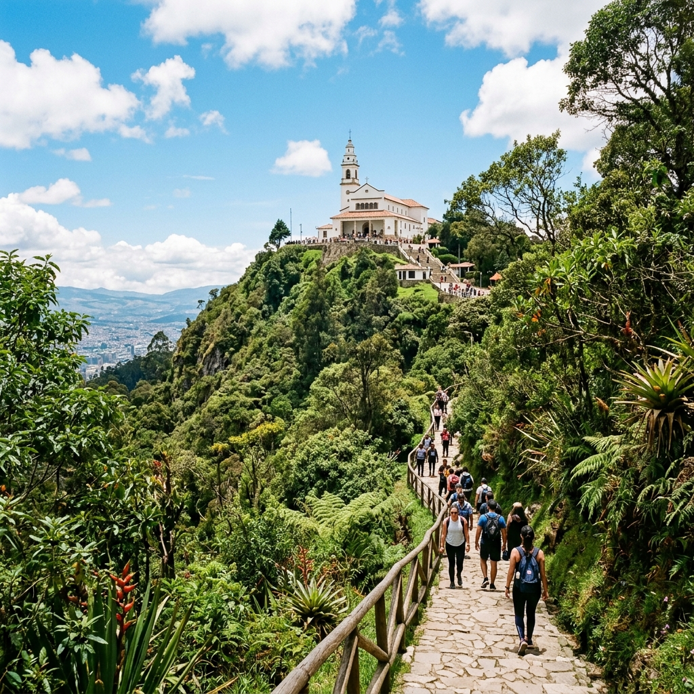

Estrategias de Concientización y Mitigación
El Reto: Educar para Conservar
La clave para solucionar el problema de las basuras en Monserrate no es únicamente aumentar la frecuencia de limpieza, sino cambiar la mentalidad del visitante. Proponemos las siguientes estrategias:
- Campaña "Tu basura, tu mochila": Incentivar a los caminantes a llevar consigo los residuos que generen hasta encontrar un punto de acopio adecuado al final del recorrido.
- Señalización Educativa: Instalar infografías a lo largo del sendero que muestren el tiempo de degradación de los materiales comunes (plástico, aluminio).
- Voluntariados de Limpieza: Jornadas mensuales donde estudiantes y ciudadanos participen activamente, generando un sentido de pertenencia.

Nuestro objetivo: Preservar la belleza natural del cerro.
Decálogo del Buen Visitante
1. Respeta los horarios establecidos.
2. Sube siempre con hidratación en envases reutilizables.
3. No alimentes a los animales silvestres (perros ferales, aves, coatíes).
4. Mantente siempre dentro del sendero demarcado.
5. Lo que sube contigo, baja contigo. ¡No dejes rastro!